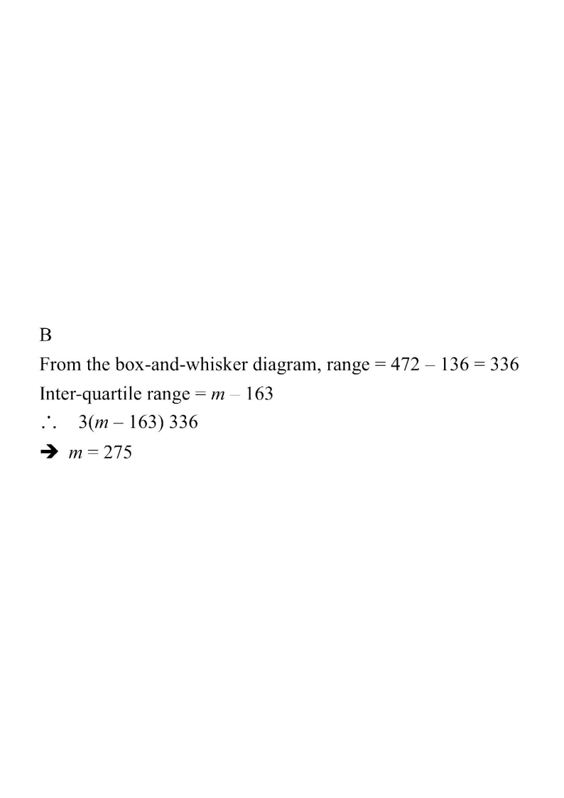

The box-and-whisker diagram below shows the distribution of the numbers of tokens got by a group of children in a game. If the range of the distribution is the triple of its inter-quartile range, find $m$.
A. 248
B. 275
C. 336
D. 360

Figure (original exam diagram)
Step-by-step solution
1Read the five-number summary
Five-number Summary of a Box Plot\(\text{Min},\ Q_1,\ Q_2,\ Q_3,\ \text{Max}\)The diagram gives \(136,\ 163,\ 224,\ m,\ 472\), with \(Q_3=m\) unknown.
The range only uses the two extreme values; it does not involve $m$.
3Write the inter-quartile range
$\text{IQR} = Q_3 - Q_1 = m - 163$.
The IQR is the width of the box.
4Set up the given relation
Range $= 3\times$ IQR:
$$472 - 136 = 3(m - 163)$$
$$336 = 3(m - 163)$$
"Range is the triple of the inter-quartile range" gives Range $=3\times$ IQR.
5Solve for $m$
$$m - 163 = \frac{336}{3} = 112$$
$$m = 112 + 163 = 275$$
Divide both sides by 3 first, then add 163.
Answer: B. 275
PRACTICESimilar question — try it yourself
Question. The box-and-whisker diagram of a distribution has minimum \(120\), \(Q_1=150\), median \(200\), \(Q_3=m\) and maximum \(450\). If the range is three times the inter-quartile range, find \(m\).
Show the worked solution
Step 1. Range \(=450-120=330\).
Step 2. \(\text{IQR}=Q_3-Q_1=m-150\).
Step 3. Range \(=3\times\text{IQR}\): \(330=3(m-150)\Rightarrow m-150=110\).